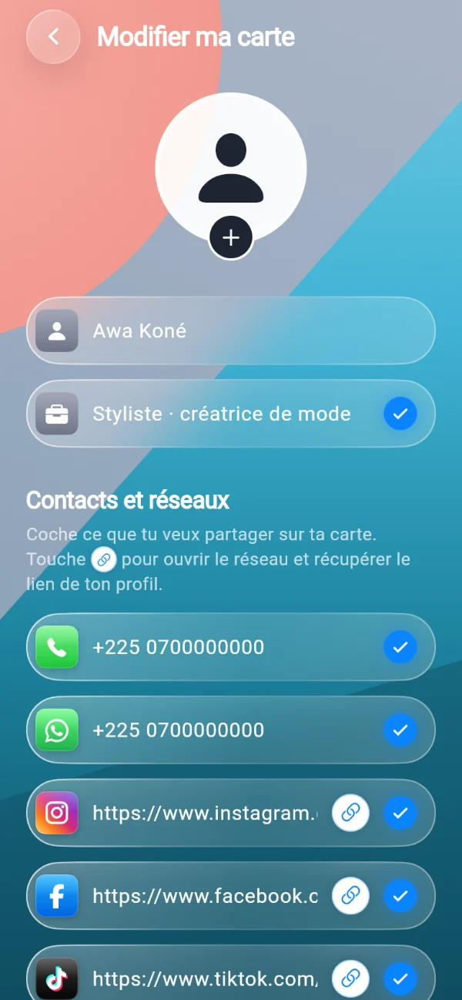
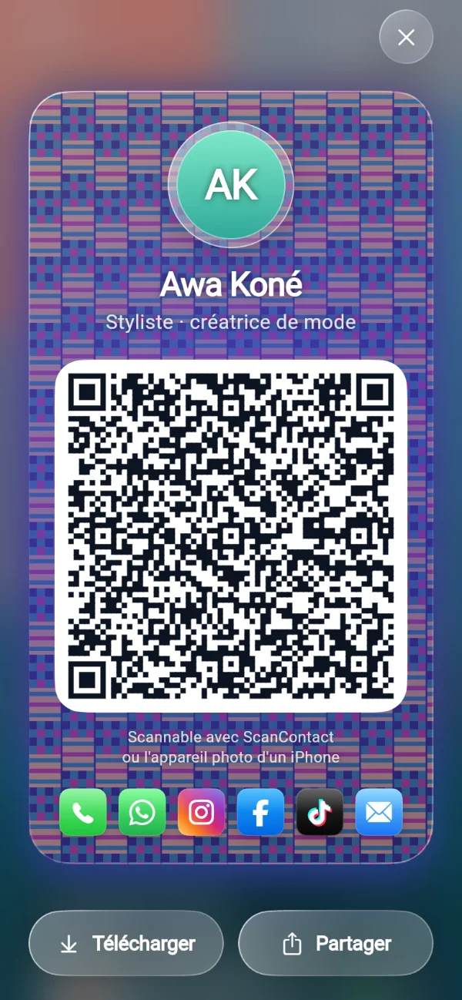
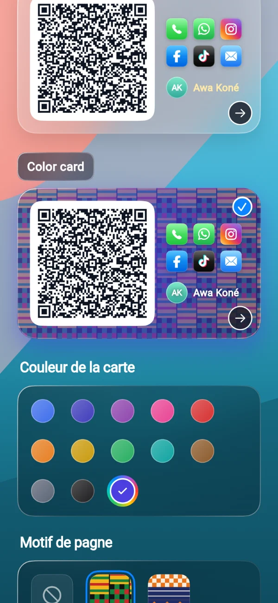
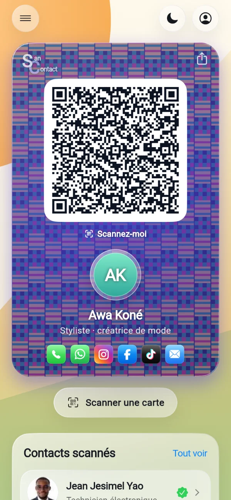
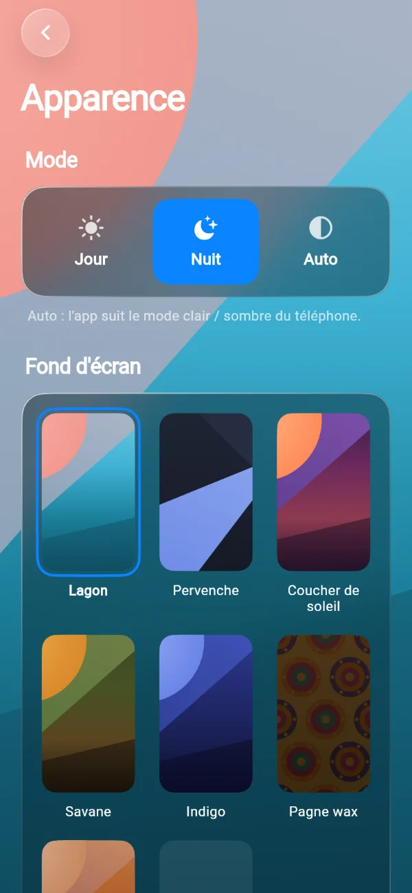

Jeunes & étudiants
Au campus, en soirée, au concert ou au maquis : échangez Instagram, Snapchat et TikTok sans épeler votre pseudo. Votre photo arrive avec, on se souvient de vous.
Gratuit · Android · lisible sur iPhone
Créez votre carte de visite virtuelle avec votre photo, votre numéro, WhatsApp, Instagram, TikTok… Montrez votre QR code : la personne en face reçoit tout, instantanément. Plus de pseudo à épeler, plus de carte papier perdue.
Comment ça marche
Pas besoin que l'autre personne s'inscrive : elle scanne, elle reçoit.

Ajoutez votre photo, votre profession et vos réseaux. Le bouton lien ouvre Instagram, TikTok ou Facebook et récupère l'adresse de votre profil tout seul. Cochez seulement ce que vous voulez partager.

Votre carte s'affiche en grand avec votre QR code. Vous pouvez aussi l'envoyer en image, en fichier texte ou en fiche contact par WhatsApp ou e-mail.
En un scan, il voit votre photo, votre nom, votre profession et vos réseaux. Un toucher sur une icône ouvre directement votre profil WhatsApp, Instagram ou TikTok. Il peut vous ajouter à son répertoire.
Pour qui ?
Des campus aux marchés, des salons professionnels aux boutiques : partout où l'on échange un numéro.
Au campus, en soirée, au concert ou au maquis : échangez Instagram, Snapchat et TikTok sans épeler votre pseudo. Votre photo arrive avec, on se souvient de vous.
Équipez toute l'équipe commerciale de cartes aux couleurs de l'entreprise. Aux salons, forums et rendez-vous clients, chaque contact repart avec vos coordonnées et votre site, sans imprimer une seule carte.
Consultant, artisan, photographe, coiffeuse, avocat, développeur : votre profession, votre WhatsApp et votre LinkedIn dans une carte que vos clients enregistrent directement dans leurs contacts.
Imprimez votre QR code et posez-le sur le comptoir, l'étal ou la vitrine. Vos clients récupèrent le WhatsApp et le Facebook de la boutique pour commander, voir les nouveautés et vous recommander.
Fonctions
Une miniature de votre photo est rangée dans le QR code : l'autre vous reconnaît du premier coup d'œil.
Chaque icône ouvre le vrai profil : WhatsApp, Instagram, TikTok, Facebook, Snapchat, LinkedIn, X, YouTube, e-mail.
Kente, Kita baoulé, Bogolan, Wax, Adinkra, Faso Dan Fani… ou votre propre image, sur une carte de la couleur de votre choix.
Un design en verre inspiré de l'iPhone, en mode clair, sombre ou automatique, avec le fond d'écran de votre choix.
Une case à cocher par information : partagez votre photo et votre profession seulement si vous le souhaitez.
Envoyez votre carte en .txt ou en .vcf : n'importe quel téléphone l'ouvre et l'ajoute au répertoire.
Retrouvez toutes les cartes scannées, enregistrez les plus importantes, cherchez par nom.
Connexion avec votre compte Google, sans mot de passe à retenir.
Aperçu



Et sur iPhone ?
ScanContact est une application Android, mais votre carte reste lisible par tout le monde :
Gratuit · Android 7 ou plus récent · version 1.0.5
Télécharger l'applicationL'installation échoue sur un téléphone ancien ? Téléchargez la version compatible
Sur ordinateur ? Scannez ce code avec votre téléphone pour l'ouvrir directement.
Touchez le bouton depuis votre téléphone Android.
Dans la notification de téléchargement ou l'application Fichiers.
Android demande d'autoriser les « applications inconnues » pour votre navigateur : c'est normal pour une app installée hors Play Store.
Connectez-vous avec Google, créez votre carte… et faites-vous scanner !
Questions fréquentes
Oui, l'application est gratuite. Si elle vous rend service, vous pouvez soutenir le projet par un petit don.
Non. Toutes les informations sont dans le QR code : on peut scanner une carte sans connexion. Avec internet, la photo de la personne s'affiche en plus en haute qualité. Internet sert aussi à se connecter et à ouvrir les réseaux sociaux.
Avec ScanContact, elle reçoit votre carte complète avec votre photo. Sans l'application, un iPhone ou un Android lit quand même vos informations en texte avec son appareil photo.
Parce que l'application est installée depuis ce site et pas depuis le Play Store. Le fichier est signé par le créateur de ScanContact. Téléchargez-le uniquement depuis ce site officiel.
Ils servent uniquement à votre compte ScanContact et ne sont jamais vendus. Votre carte, vos réseaux et les contacts scannés restent sur votre téléphone. Voir la politique de confidentialité.
Oui : chaque information (photo, profession, numéro, chaque réseau) a sa propre case à cocher. Ce qui n'est pas coché n'est jamais mis dans le QR code.
Le créateur
Technicien en génie électrique et électronique basé à Abidjan, Jean Jesimel a imaginé ScanContact pour que chacun puisse partager ses contacts professionnels et ses réseaux en un seul geste, sur Android comme sur iPhone.
Écrire au créateurSoutenir le projet
ScanContact est gratuit et développé par un créateur indépendant. Un don ou une idée, chaque geste compte.
Votre don soutient directement le créateur et l'aide à faire vivre et à améliorer l'application.
Faire un don avec WaveMontant suggéré : 1 000 FCFA. Le paiement se fait sur la page officielle de Wave (pay.wave.com), dans un nouvel onglet.
Une fonction qui manque, un problème, une remarque : le créateur lit tous les messages.